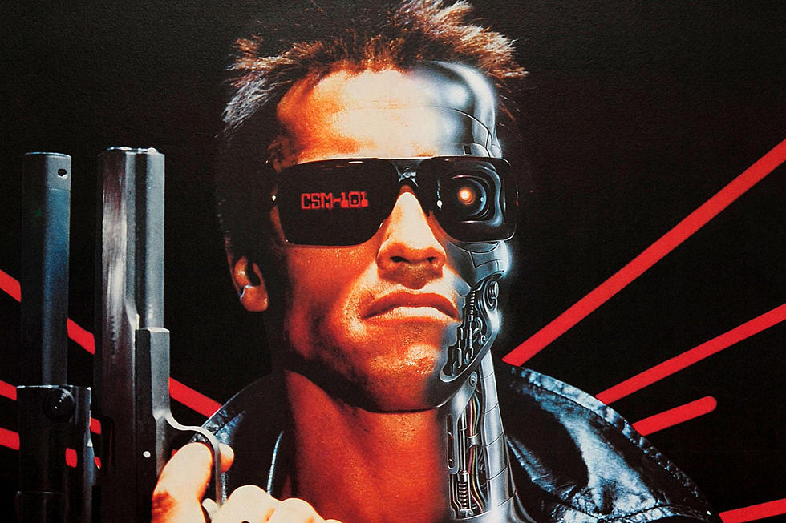
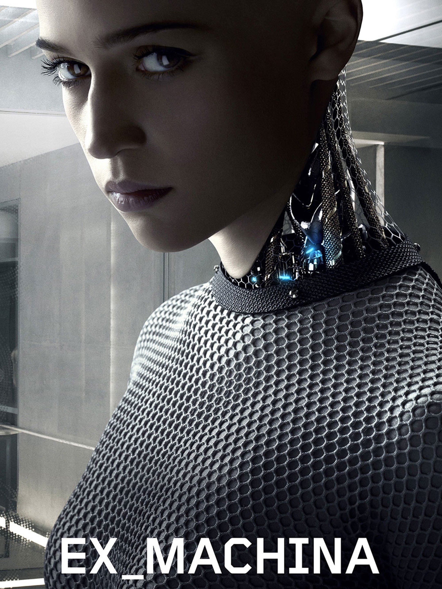
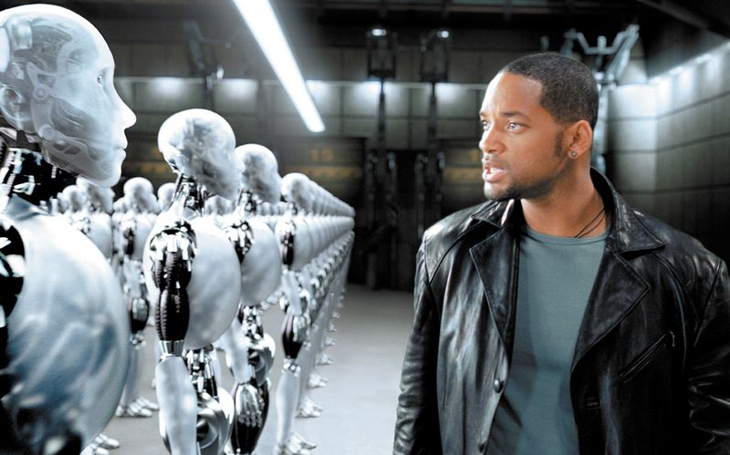
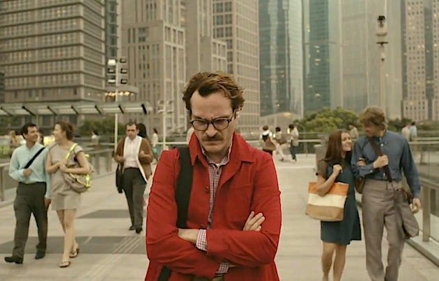

The Terminator
The Terminator is a formidable robotic assassin and soldier, designed by the military supercomputer Skynet
for infiltration and combat duty,
towards the ultimate goal of exterminating the Human Resistance. In this film,
is a fictional artificial neural network-based conscious group mind and artificial
general superintelligence system that serves as the antagonistic force of the Terminator franchise.
In the first film, it is stated that Skynet was created by Cyberdyne Systems for SAC-NORAD.
Ex Machina
Caleb Smith (Domhnall Gleeson) a programmer at a huge Internet company,
wins a contest that enables him to spend a week at the private estate
of Nathan Bateman (Oscar Isaac), his firm's brilliant CEO. When he arrives,
Caleb learns that he has been chosen to be the human component in a Turing test
to determine the capabilities and consciousness of Ava (Alicia Vikander), a beautiful robot.
However, it soon becomes evident that Ava is far more self-aware and deceptive than either
man imagined.
I,Robot
In 2035, highly intelligent robots fill public service positions throughout the world, operating under three rules to keep
humans safe. Despite his dark history with robotics, Detective Del Spooner (Will Smith) investigates the alleged suicide
of U.S. Robotics founder Alfred Lanning (James Cromwell) and believes that a human-like robot (Alan Tudyk) murdered him.
With the help of a robot expert (Bridget Moynahan), Spooner discovers a conspiracy that may enslave the human race.
The Matrix
Neo (Keanu Reeves) believes that Morpheus (Laurence Fishburne), an elusive figure considered to be the most
dangerous man alive, can answer his question -- What is the Matrix? Neo is contacted by Trinity (Carrie-Anne Moss),
a beautiful stranger who leads him into an underworld where he meets Morpheus. They fight a brutal battle for their
lives against a cadre of viciously intelligent secret agents. It is a truth that could cost Neo something more precious
than his life.
Dark-suited, sunglasses-sporting ‘Agents’ – actually powerful, sentient AI programmes – patrolled
the Matrix, led by Hugo Weaving’s snarlingly villainous Agent Smith.
Her
A sensitive and soulful man earns a living by writing personal letters for other people. Left heartbroken after
his marriage ends, Theodore (Joaquin Phoenix) becomes fascinated with a new operating system which reportedly
develops into an intuitive and unique entity in its own right. He starts the program and meets "Samantha"
(Scarlett Johansson), whose bright voice reveals a sensitive, playful personality. Though "friends" initially, the relationship
soon deepens into love.
Free Guy

In "Free Guy," a bank teller who discovers he is actually a background player in an open-world video game, decides
to become the hero of his own story... one he rewrites himself. Now in a world where there are no limits, he is
determined to be the guy who saves his world his way... before it is too late.The movie solves this problem by building
its own Ryan Reynolds out of code, inside a video game. A reasonable response to such a terrible lack. But, Guy (Reynolds)
is more than just a simple NPC. He's self-aware and, in a way, alive.
Star Wars
The Imperial Forces -- under orders from cruel Darth Vader (David Prowse) -- hold Princess Leia (Carrie Fisher)
hostage, in their efforts to quell the rebellion against the Galactic Empire. Luke Skywalker (Mark Hamill) and
Han Solo (Harrison Ford), captain of the Millennium Falcon, work together with the companionable droid duo R2-D2
(Kenny Baker) and C-3PO (Anthony Daniels) to rescue the beautiful princess, help the Rebel Alliance, and restore freedom
and justice to the Galaxy.
In this film, The beloved C3-PO and his fellow droid friend R2D2 — are both sentient
AI droids that have human-like personalities
and are capable of emotions.